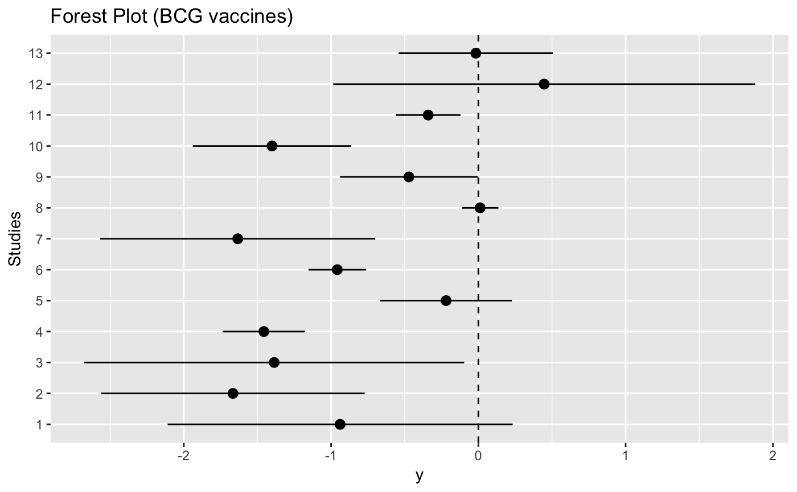

vignettes/MetaStan_BNHM.Rmd
MetaStan_BNHM.RmdTo fit meta-analysis models using frequentist methods, there are many R packages available including metafor. On the other hand, Bayesian estimation methods such as Markov chain Monte Carlo (MCMC) are very attractive for meta-analysis, especially because they can be used to fit more complicated models. These include binomial-normal hierarchical models and beta-binomial models which are based on the exact distributional assumptions unlike (commonly used) normal-normal hierarchical model. Another advantage of Bayesian methods to be able to use informative prior distributions for example to regularize heterogeneity estimates in case of low number of studies. Thus, we developed MetaStan which uses Stan (a modern MCMC engine) to fit several pairwise meta-analysis models including binomial-normal hierarchical model and beta-binomial model. This package is also the accompanying package of Günhan, Röver, and Friede (2018).
The development version of MetaStan is available on Github (https://github.com/gunhanb/MetaStan) and can be installed using devtools package as follows:
The BCG trials example is available in the package, and it can be loaded as follows:
library("MetaStan")
# Loading required package: Rcpp
# Registered S3 methods overwritten by 'ggplot2':
# method from
# [.quosures rlang
# c.quosures rlang
# print.quosures rlang
data("dat.Berkey1995", package = "MetaStan")
head(dat.Berkey1995)
# Trial rt nt rc nc Latitude
# 1 1 4 123 11 139 44
# 2 2 6 306 29 303 55
# 3 3 3 231 11 220 42
# 4 4 62 13598 248 12867 52
# 5 5 33 5069 47 5808 13
# 6 6 180 1541 372 1451 44Additional information can be obtained by typing ?dat.Berkey1995 (for any dataset and function in the package).
We can visualize individual log odds ratio estimates plot using ggplot2 as follows:
library(ggplot2)
# Calculating log odds ratios and variances from data
logodds <- function(x) log((x[1] * (x[4] - x[3]))/((x[2] - x[1]) * x[3]))
stdes <- function(x) sqrt(1/x[1] + 1/(x[2] - x[1]) + 1/x[3] + 1/(x[4] - x[3]))
r_ind <- apply(cbind(dat.Berkey1995$rt, dat.Berkey1995$nt,
dat.Berkey1995$rc, dat.Berkey1995$nc), 1, logodds)
se_ind <- apply(cbind(dat.Berkey1995$rt, dat.Berkey1995$nt,
dat.Berkey1995$rc, dat.Berkey1995$nc), 1, stdes)
lower95_ind <- r_ind + qnorm(.025) * se_ind
upper95_ind <- r_ind + qnorm(.975) * se_ind
# Comparison of the results
trials <- c("1", "2" ,"3", "4", "5", "6", "7", "8", "9", "10", "11", "12", "13")
trials <- ordered(trials, levels = trials)
d <- data.frame(x = trials,
y = r_ind,
ylo = lower95_ind,
yhi = upper95_ind)
forest.plot <- ggplot(d, aes(x = x, y = y, ymin = ylo, ymax = yhi)) +
geom_pointrange() +
coord_flip() +
geom_hline(aes(yintercept=0), lty = 2) +
xlab("Studies") +
ggtitle("Forest Plot (BCG vaccines)")
plot(forest.plot)
metastan is the main fitting function of this package. The main computations are executed via the rstan package’s sampling function. We can fit the binomial-normal hierarchical model (Günhan, Röver, and Friede 2018) using a weakly informative prior for treatment effect as follows:
bnhm1.BCG.stan <- meta_stan(ntrt = nt,
nctrl = nc,
rtrt = rt,
rctrl = rc,
data = dat.Berkey1995,
tau_prior_dist = "half-normal",
tau_prior = 0.5,
theta_prior = c(0, 2.82),
model = "BNHM1",
chains = 4,
iter = 2000,
warmup = 1000)Convergence diagnostics, very conveniently, obtained using shinystan package as follows:
library("shinystan")
## Firstly convert "stan" object to a "shinystan" object
bnhm1.BCG.shinystan = as.shinystan(bnhm1.BCG.stan$fit)
launch_shinystan(bnhm1.BCG.shinystan)A simple summary of the fitted model is given by print option:
print(bnhm1.BCG.stan)
# Meta-analysis using MetaStan
# Mean treatment effect
# mean 2.5% 50% 97.5%
# -0.73 -1.13 -0.73 -0.34
# Heterogeneity stdev
# mean 2.5% 50% 97.5%
# 0.60 0.36 0.58 0.94Note that this model corresponds to Model 4 in Jackson et al. (2018). The model 2 in Jackson et al. (2018) can be fitted by specfying model = "BNHM2" as follows:
bnhm2.BCG.stan <- meta_stan(ntrt = nt,
nctrl = nc,
rtrt = rt,
rctrl = rc,
data = dat.Berkey1995,
theta_prior = c(0, 2.82),
tau_prior_dist = "half-normal",
tau_prior = 0.5,
model = "BNHM2")print(bnhm2.BCG.stan)
# Meta-analysis using MetaStan
# Mean treatment effect
# mean 2.5% 50% 97.5%
# -0.75 -1.13 -0.75 -0.36
# Heterogeneity stdev
# mean 2.5% 50% 97.5%
# 0.60 0.37 0.58 0.96Please see Günhan, Röver, and Friede (2018) and Jackson et al. (2018) for complete model descriptions.
Günhan, BK, C Röver, and T Friede. 2018. “Meta-Analysis of Few Studies Involving Rare Events. ArXiv.org E-Print Archive. 1809.04407.”
Jackson, D, M Law, T Stijnen, W Viechtbauer, and IR White. 2018. “A Comparison of 7 Random-Effects Models for Meta-Analyses That Estimate the Summary Odds Ratio.” Stat Med 37 (7): 1059–85.